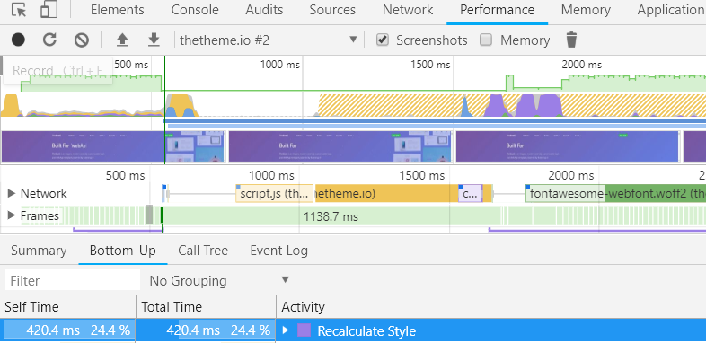
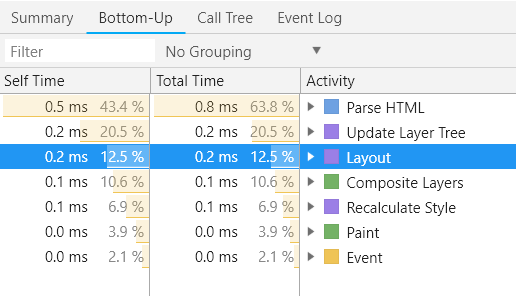

HTML/XTML and Critical rendering path
Created by Maksym Kolisnyk
Agenda
- Intro in HTML/XHTML
- Constructing the Object Model
- Render-Tree Construction Layout and Paint
- Render-Blocking CSS
- Adding Interactivity with JavaScript
Intro in HTML/XHTML
Developed in 1986—1991 by Tim Berners-Lee
Timeline
24.11.1995
HTML 2.0 was published as IETF RFC 1866
14.01.1997
HTML 3.2 was published as a W3C Recom.
18.12.1997
HTML 4.0 was published as a W3C Recom.
24.12.1999
HTML 4.01 was published as a W3C Recom.
15.05.2000
ISO HTML, based on HTML 4.01 Strict was published as an ISO/IEC international standard
28.10.2014
HTML5 was published as a W3C Recom.
03.10.2017
HTML5.1 was published as a W3C Recom.
XHTML1
XHTML1
extensible hypertext markup language
In 1998, World Wide Web Consortium began work on the new markup language based on HTML 4 but corresponding syntax XML. Subsequently, a new language called XHTML. The first version of XHTML 1.0 as a Recommendation approved by W3C in January 26, 2000.
SGML 1960
HTML
1990
XML
1996
XHTML
2000
Differences between XHTML and HTML
The main difference with HTML and XHTML is processing the document.
XHTML documents are processed by its module (parser) similar documents XML.
During this processing, the mistakes made by developers, not corrected.
As a W3C Recommendation browsers encountering an error in XHTML, you must report it and not to process document.
For HTML browsers had to try to understand what the author meant;
Browser selects the parser to process the document based on the header content-type, obtained from the server:
HTML — text/html
XHTML — application/xhtml+xml
The default encoding is UTF-8 (as opposed to HTML, which is the default encoding ISO 8859-1).
Rules of XHTML
- All elements must be closed. Tags that don't have a closing tag (e.g. <img> or <br>), must have at the end / (e.g. <br />)
- Logical attributes are written in expanded form. For example, you should write <option selected="selected"> or <td nowrap="nowrap"> instead <option selected> or <td nowrap>
- Tag names and attributes must be written in lowercase letters (e.g. <img alt="" /> instead <IMG ALT="" />)
- XHTML is much stricter refers to errors in the code < and & everywhere, even in the URL, must be replaced by < and & respectively.
Constructing the Object Model

CSSOM Model
body { font-size: 16px }
p { font-weight: bold }
span { color: red }
p span { display: none }
img { float: right }

CSSOM TREE

Recalculate style
Render-Tree Construction Layout and Paint
Render-Tree Construction

Layout perfomance
Render-Blocking CSS
The new york times with/without css
Useful examples
Constructing the Object Model
JS and DOM
Hello web performance students!

Hello web performance students!
Hello web performance students!